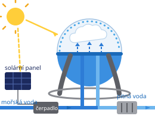

Matematická úloha
Pitná voda
Inspirováno mezinárodním šetřením PISA
Čtyři otázky o tom, jak se dá ze slunce vyrábět pitná voda — budeš číst graf, pracovat se simulací, počítat s rozměry a s penězi.
Matematická úloha
Inspirováno mezinárodním šetřením PISA
Čtyři otázky o tom, jak se dá ze slunce vyrábět pitná voda — budeš číst graf, pracovat se simulací, počítat s rozměry a s penězi.

Objeví se na tvém přehledu odpovědí.
Nic se neodesílá ani neukládá. Odpovědi i jméno zůstávají jen v tomto okně prohlížeče a po jeho zavření zmizí. Test není známkovaný.
Zdroj dat ke grafu: Progress on drinking water, sanitation and hygiene 2017, WHO a UNICEF. Úloha je původní, připravená Českou republikou pro PISA 2021.